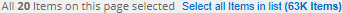
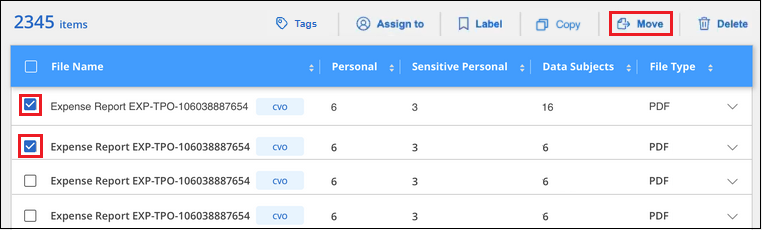
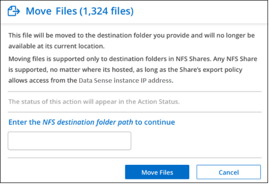
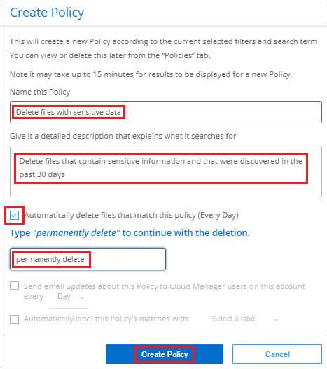

문서 변경 요청
문서 변경 요청 이 페이지 편집
이 페이지 편집 기여하는 방법 자세히 알아보기
기여하는 방법 자세히 알아보기개인 데이터 관리
Cloud Data Sense는 여러 가지 방법으로 개인 데이터를 관리할 수 있습니다. 일부 기능을 사용하면 데이터 마이그레이션을 쉽게 준비할 수 있을 뿐만 아니라 다른 기능도 데이터를 변경할 수 있습니다.
-
특정 데이터의 복사본을 만들어 다른 NFS 위치로 이동하려는 경우 대상 NFS 공유에 파일을 복사할 수 있습니다.
-
클론 복제된 새 볼륨의 소스 볼륨에서 선택한 파일만 포함하여 ONTAP 볼륨을 새 볼륨으로 복제할 수 있습니다. 이 기능은 데이터를 마이그레이션하고 원본 볼륨에서 특정 파일을 제외하려는 경우에 유용합니다.
-
소스 리포지토리에서 특정 대상 위치의 디렉토리로 파일을 복사 및 동기화할 수 있습니다. 이 기능은 소스 파일에 대한 최종 작업이 아직 남아 있는 동안 소스 시스템 간에 데이터를 마이그레이션하는 경우에 유용합니다.
-
데이터 센스에서 스캔 중인 소스 파일을 모든 NFS 공유로 이동할 수 있습니다.
-
안전하지 않거나 위험한 것으로 보이는 파일을 스토리지 시스템에 남겨 두거나 중복으로 식별한 경우 삭제할 수 있습니다.

|
|
원본 파일을 복사하는 중입니다
데이터 센스에서 스캔 중인 모든 소스 파일을 복사할 수 있습니다. 달성하려는 목표에 따라 세 가지 유형의 복사 작업이 있습니다.
-
* 동일 또는 다른 볼륨 또는 데이터 소스에서 대상 NFS 공유로 파일 * 복사
특정 데이터의 복사본을 만들어 다른 NFS 위치로 이동하려는 경우 유용합니다.
-
* 동일한 애그리게이트의 새 볼륨에 ONTAP 볼륨 * 을 클론 복제하지만 새로운 클론 복제된 볼륨의 소스 볼륨에서 선택한 파일만 포함됩니다.
이 기능은 데이터를 마이그레이션하고 원본 볼륨에서 특정 파일을 제외하려는 경우에 유용합니다. 이 작업은 를 사용합니다 "플랙스클론" 볼륨을 빠르게 복제한 다음 * 선택하지 않은 * 파일을 제거하는 기능입니다.
-
* 단일 소스 저장소(ONTAP 볼륨, S3 버킷, NFS 공유 등)의 파일 * 을 특정 대상(타겟) 위치의 디렉토리로 복사 및 동기화합니다.
이 기능은 소스 시스템 간에 데이터를 마이그레이션하는 경우에 유용합니다. 초기 복사 후 서비스는 사용자가 설정한 일정에 따라 변경된 데이터를 동기화합니다. 이 작업은 를 사용합니다 "NetApp Cloud Sync를 참조하십시오" 소스에서 타겟으로 데이터를 복제 및 동기화하는 기능
소스 파일을 NFS 공유에 복사하는 중입니다
Data Sense에서 스캔 중인 소스 파일을 모든 NFS 공유로 복사할 수 있습니다. NFS 공유는 데이터 센스에 통합할 필요가 없으며 선택한 모든 파일이 "<host_name>:/<share_path>" 형식으로 복사될 NFS 공유의 이름을 알아야 합니다.

|
데이터베이스에 있는 파일은 복사할 수 없습니다. |
-
파일을 복사하려면 계정 관리자 또는 작업 영역 관리자 역할이 있어야 합니다.
-
파일을 복사하려면 대상 NFS 공유에서 Data Sense 인스턴스에서 액세스할 수 있어야 합니다.
-
한 번에 최대 100,000개의 파일을 복사할 수 있습니다.
-
데이터 조사 결과 창에서 복사할 파일을 선택하고 * 복사 * 를 클릭합니다.

-
개별 파일을 선택하려면 각 파일(
 )를 클릭합니다.
)를 클릭합니다. -
현재 페이지의 모든 파일을 선택하려면 제목 행(
 )를 클릭합니다.
)를 클릭합니다. -
모든 페이지의 모든 파일을 선택하려면 제목 행(
)를 클릭한 다음 팝업 메시지에서 를 클릭합니다 목록에서 * 모든 항목 선택(xxx개 항목) * 을 클릭합니다.
-
-
파일 복사 대화 상자에서 * 일반 복사 * 탭을 선택합니다.

-
선택한 모든 파일이 복사될 NFS 공유의 이름을 "<host_name>:/<share_path>" 형식으로 입력하고 * Copy * 를 클릭합니다.
복사 작업 상태와 함께 대화 상자가 나타납니다.
에서 복사 작업의 진행률을 볼 수 있습니다 "작업 상태 창".
파일의 메타데이터 세부 정보를 볼 때 개별 파일을 복사할 수도 있습니다. 파일 복사 * 를 클릭하기만 하면 됩니다.

볼륨 데이터를 새 볼륨에 클로닝
NetApp_FlexClone_기능을 사용하여 데이터 센스에서 스캔 중인 기존 ONTAP 볼륨을 클론 복제할 수 있습니다. 이렇게 하면 선택한 파일만 포함하면서 볼륨을 빠르게 복제할 수 있습니다. 이 기능은 데이터를 마이그레이션하는 동안 원본 볼륨에서 특정 파일을 제외하려는 경우 또는 테스트할 볼륨의 복사본을 만들려는 경우에 유용합니다.
새 볼륨은 소스 볼륨과 동일한 애그리게이트에 생성됩니다. 이 작업을 시작하기 전에 aggregate에서 이 새 볼륨을 위한 공간이 충분한지 확인하십시오. 필요한 경우 스토리지 관리자에게 문의하십시오.
-
참고: * FlexGroup 볼륨은 FlexClone에서 지원하지 않으므로 복제할 수 없습니다.
-
파일을 복사하려면 계정 관리자 또는 작업 영역 관리자 역할이 있어야 합니다.
-
선택한 모든 파일은 동일한 볼륨에서 가져온 것이어야 하며 볼륨이 온라인 상태여야 합니다.
-
볼륨은 Cloud Volumes ONTAP 또는 사내 ONTAP 시스템이어야 합니다. 현재 다른 데이터 원본은 지원되지 않습니다.
-
FlexClone 라이센스가 클러스터에 설치되어 있어야 합니다. 이 라이센스는 Cloud Volumes ONTAP 시스템에 기본적으로 설치됩니다.
-
데이터 조사 창에서 단일 * 작업 환경 * 과 단일 * 저장소 * 를 선택하여 모든 파일이 동일한 ONTAP 볼륨에서 생성되도록 필터를 만듭니다.

새 볼륨에 복제할 파일만 표시되도록 다른 필터를 적용합니다.
-
조사 결과 창에서 복제할 파일을 선택하고 * 복사 * 를 클릭합니다.
-
개별 파일을 선택하려면 각 파일(
)를 클릭합니다. -
현재 페이지의 모든 파일을 선택하려면 제목 행(
)를 클릭합니다. -
모든 페이지의 모든 파일을 선택하려면 제목 행(
)를 클릭한 다음 팝업 메시지에서 를 클릭합니다 목록에서 * 모든 항목 선택(xxx개 항목) * 을 클릭합니다.
-
-
파일 복사 대화 상자에서 * FlexClone * 탭을 선택합니다. 이 페이지에는 볼륨에서 복제할 총 파일 수(선택한 파일)와 클론 복제된 볼륨에서 포함/삭제되지 않은 파일 수(선택하지 않은 파일)가 표시됩니다.

-
새 볼륨의 이름을 입력하고 * FlexClone * 을 클릭합니다.
클론 작업의 상태가 표시된 대화 상자가 나타납니다.
클론 복제된 새 볼륨은 소스 볼륨과 동일한 애그리게이트에 생성됩니다.
에서 클론 작업의 진행률을 볼 수 있습니다 "작업 상태 창".
소스 볼륨이 있는 작업 환경에 대해 데이터 센스를 활성화하면 처음에 * 모든 볼륨 매핑 * 또는 * 모든 볼륨 매핑 및 분류 * 를 선택한 경우 데이터 센스에서 복제된 새 볼륨을 자동으로 스캔합니다. 처음에 이러한 선택 항목을 사용하지 않은 경우 이 새 볼륨을 스캔하려면 가 필요합니다 "수동으로 볼륨에서 스캔을 활성화합니다".
소스 파일을 대상 시스템에 복사 및 동기화 중입니다
Data Sense가 스캔 중인 소스 파일을 지원되는 비정형 데이터 소스에서 특정 대상 위치의 디렉토리로 복사할 수 있습니다 ("Cloud Sync에서 지원하는 타겟 위치입니다")를 클릭합니다. 초기 복제 후에는 구성한 일정에 따라 파일에서 변경된 모든 데이터가 동기화됩니다.
이 기능은 소스 시스템 간에 데이터를 마이그레이션하는 경우에 유용합니다. 이 작업은 를 사용합니다 "NetApp Cloud Sync를 참조하십시오" 소스에서 타겟으로 데이터를 복제 및 동기화하는 기능
|
|
데이터베이스, OneDrive 계정 또는 SharePoint 계정에 있는 파일은 복사 및 동기화할 수 없습니다. |
-
파일을 복사 및 동기화하려면 계정 관리자 또는 작업 영역 관리자 역할이 있어야 합니다.
-
선택한 모든 파일은 동일한 소스 저장소(ONTAP 볼륨, S3 버킷, NFS 또는 CIFS 공유 등)에서 가져온 것이어야 합니다.
-
Cloud Sync 서비스를 활성화하고 소스 시스템과 타겟 시스템 간에 파일을 전송하는 데 사용할 수 있는 데이터 브로커를 하나 이상 구성해야 합니다. 부터 시작되는 Cloud Sync 요구 사항을 검토합니다 "빠른 시작 설명".
Cloud Sync 서비스에는 동기화 관계에 대한 별도의 서비스 요금이 부과되며, 클라우드에 데이터 브로커를 구축할 경우 리소스 요금이 발생합니다.
-
데이터 조사 창에서 하나의 * 작업 환경 * 과 하나의 * 저장소 저장소 * 를 선택하여 모든 파일이 동일한 리포지토리의 파일인지 확인하는 필터를 만듭니다.
대상 시스템에 복사 및 동기화할 파일만 표시되도록 다른 필터를 적용합니다.
-
조사 결과 창에서 제목 행(
)를 선택한 다음 팝업 메시지를 표시합니다 목록에서 모든 항목 선택(xxx개 항목) * 을 클릭한 다음 * 복사 * 를 클릭합니다.
-
파일 복사 대화 상자에서 * 동기화 * 탭을 선택합니다.

-
선택한 파일을 대상 위치에 동기화하려면 * 확인 * 을 클릭합니다.
Cloud Sync UI는 Cloud Manager에서 열립니다.
동기화 관계를 정의하라는 메시지가 표시됩니다. 소스 시스템은 데이터 센스에서 이미 선택한 리포지토리와 파일을 기반으로 미리 채워집니다.
-
대상 시스템을 선택한 다음 사용하려는 데이터 브로커를 선택(또는 생성)해야 합니다. 부터 시작되는 Cloud Sync 요구 사항을 검토합니다 "빠른 시작 설명".
파일이 대상 시스템에 복사되고 사용자가 정의한 일정에 따라 동기화됩니다. 1회 동기화를 선택하면 파일이 한 번만 복사되고 동기화됩니다. 주기적 동기화를 선택하면 일정에 따라 파일이 동기화됩니다. 필터를 사용하여 만든 쿼리와 일치하는 새 파일이 소스 시스템에 추가되는 경우 해당 _new_files는 대상에 복사되고 나중에 동기화됩니다.
데이터 센스에서 일반적인 Cloud Sync 작업을 호출하면 일부 작업이 비활성화됩니다.
-
소스 * 에서 파일 삭제 또는 * 대상 * 에서 파일 삭제 버튼을 사용할 수 없습니다.
-
보고서 실행이 비활성화됩니다.
소스 파일을 NFS 공유로 이동하는 중입니다
데이터 센스에서 스캔 중인 소스 파일을 모든 NFS 공유로 이동할 수 있습니다. NFS 공유는 데이터 센스에 통합할 필요가 없습니다(참조) "파일 공유를 검색하는 중입니다")를 클릭합니다.
대상 위치에 같은 이름의 파일이 있으면 파일이 이동하지 않습니다.
|
|
데이터베이스에 있는 파일은 이동할 수 없습니다. |
-
파일을 이동하려면 계정 관리자 또는 작업 영역 관리자 역할이 있어야 합니다.
-
파일을 이동하려면 NFS 공유를 통해 Data Sense 인스턴스 IP 주소에 액세스할 수 있어야 합니다.
-
한 번에 최대 100,000개의 파일을 이동할 수 있습니다.
-
데이터 조사 결과 창에서 이동할 파일을 선택합니다.

-
개별 파일을 선택하려면 각 파일(
)를 클릭합니다. -
현재 페이지의 모든 파일을 선택하려면 제목 행(
)를 클릭합니다.
-
-
단추 모음에서 * 이동 * 을 클릭합니다.

-
Move Files_대화 상자에서 선택한 모든 파일이 "<host_name>:/<share_path>" 형식으로 이동될 NFS 공유의 이름을 입력하고 * Move Files * 를 클릭합니다.
파일의 메타데이터 세부 정보를 볼 때 개별 파일을 이동할 수도 있습니다. 파일 이동 * 을 클릭하기만 하면 됩니다.

원본 파일을 삭제하는 중입니다
안전하지 않거나 너무 위험한 소스 파일을 스토리지 시스템에 남겨 두거나 중복으로 식별한 경우 영구적으로 제거할 수 있습니다. 이 작업은 영구적이며 실행 취소 또는 복원이 없습니다.
조사 창에서 파일을 수동으로 삭제하거나 정책을 자동으로 사용할 수 있습니다.
|
|
데이터베이스에 있는 파일은 삭제할 수 없습니다. |
파일을 삭제하려면 다음 권한이 필요합니다.
-
NFS 데이터의 경우 - 내보내기 정책을 쓰기 권한으로 정의해야 합니다.
-
CIFS 데이터의 경우 - CIFS 자격 증명에 쓰기 권한이 있어야 합니다.
-
S3 데이터의 경우 - IAM 역할에는 's3:DeleteObject' 권한이 포함되어야 합니다.
소스 파일을 수동으로 삭제하는 중입니다
-
파일을 삭제하려면 계정 관리자 또는 작업 영역 관리자 역할이 있어야 합니다.
-
한 번에 최대 100,000개의 파일을 삭제할 수 있습니다.
-
데이터 조사 결과 창에서 삭제할 파일을 선택합니다.

-
개별 파일을 선택하려면 각 파일(
)를 클릭합니다. -
현재 페이지의 모든 파일을 선택하려면 제목 행(
)를 클릭합니다. -
모든 페이지의 모든 파일을 선택하려면 제목 행(
)를 클릭한 다음 팝업 메시지에서 를 클릭합니다 목록에서 * 모든 항목 선택(xxx개 항목) * 을 클릭합니다.
-
-
버튼 모음에서 * 삭제 * 를 클릭합니다.
-
삭제 작업은 영구적이므로 후속 _Delete File_대화 상자에 " * 영구 삭제 * "를 입력하고 * 파일 삭제 * 를 클릭해야 합니다.
에서 삭제 작업의 진행률을 볼 수 있습니다 "작업 상태 창".
파일의 메타데이터 세부 정보를 볼 때 개별 파일을 삭제할 수도 있습니다. 파일 삭제 * 를 클릭하기만 하면 됩니다.

정책을 사용하여 소스 파일을 자동으로 삭제합니다
사용자 지정 정책을 만들어 정책과 일치하는 파일을 삭제할 수 있습니다. 예를 들어, 지난 30일 동안 데이터 센스에서 검색한 중요한 정보가 포함된 파일을 삭제할 수 있습니다.
계정 관리자만 파일을 자동으로 삭제하는 정책을 만들 수 있습니다.
|
|
정책과 일치하는 모든 파일이 하루에 한 번 영구적으로 삭제됩니다. |
-
데이터 조사 페이지에서 사용할 필터를 모두 선택하여 검색을 정의합니다. 을 참조하십시오 "데이터 조사 페이지의 데이터 필터링" 를 참조하십시오.
-
원하는 방식으로 모든 필터 특성을 찾은 후 * 이 검색에서 정책 생성 * 을 클릭합니다.
-
정책의 이름을 지정하고 정책에서 수행할 수 있는 다른 작업을 선택합니다.
-
고유한 이름과 설명을 입력합니다.
-
"이 정책과 일치하는 파일을 자동으로 삭제" 확인란을 선택하고 * 영구적으로 삭제 * 를 입력하여 이 정책에 따라 파일을 영구적으로 삭제할 것인지 확인합니다.
-
Create Policy * 를 클릭합니다.

-
새 정책이 정책 탭에 나타납니다. 정책과 일치하는 파일은 정책이 실행될 때 하루에 한 번 삭제됩니다.
에서 삭제된 파일 목록을 볼 수 있습니다 "작업 상태 창".